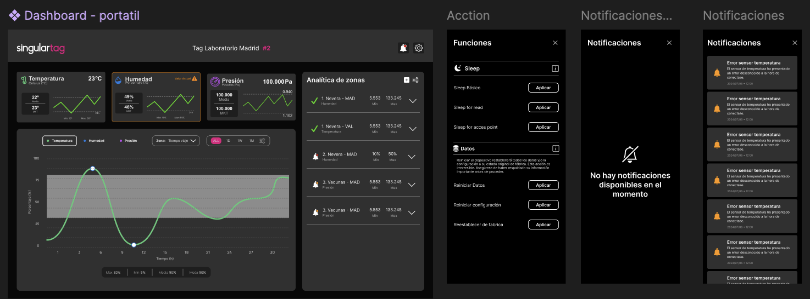
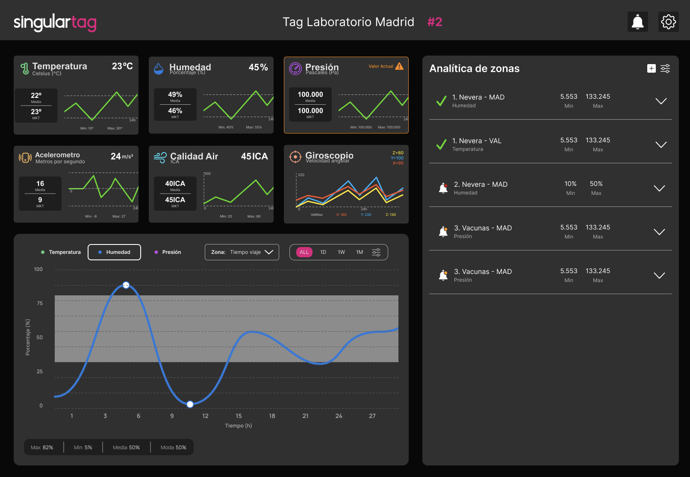
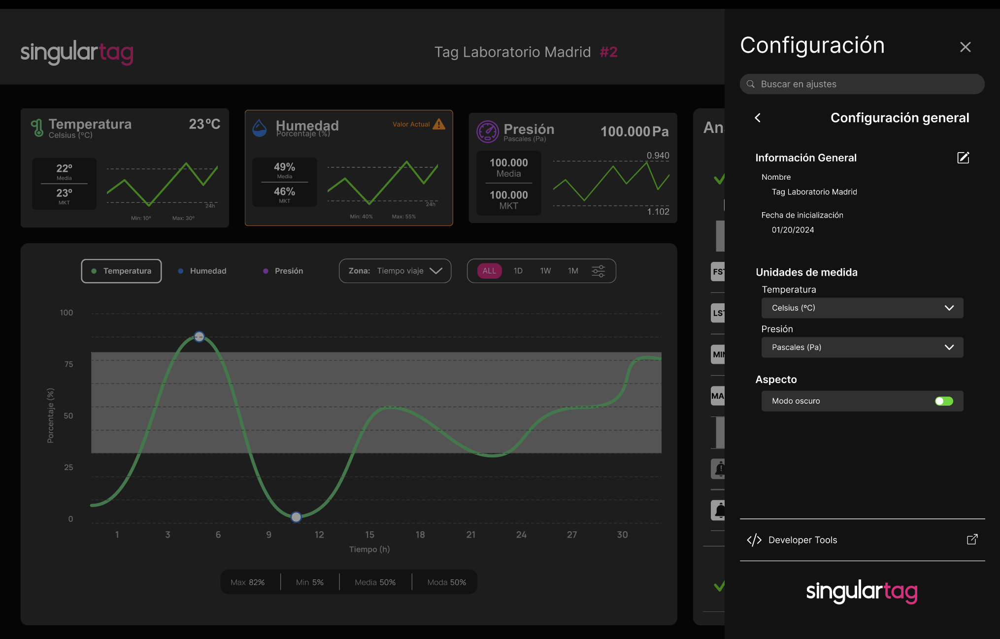
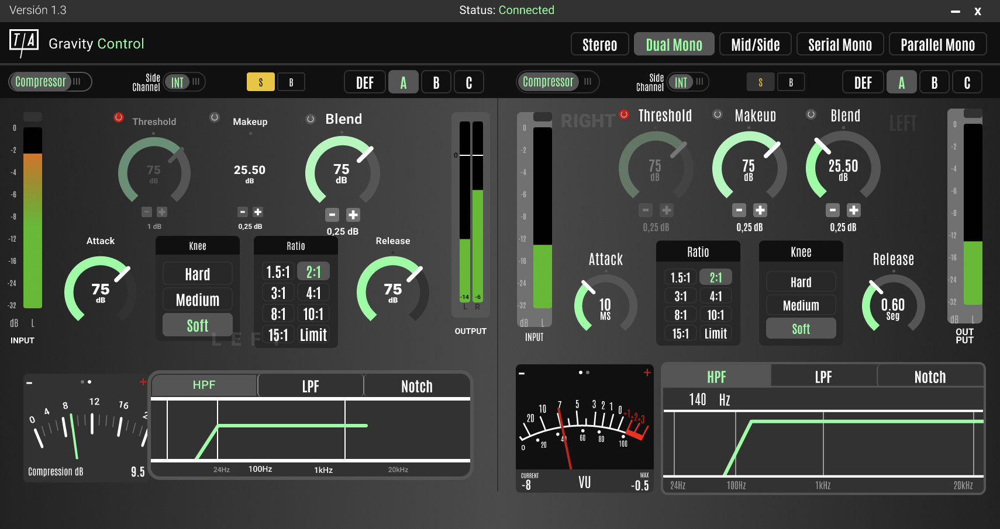
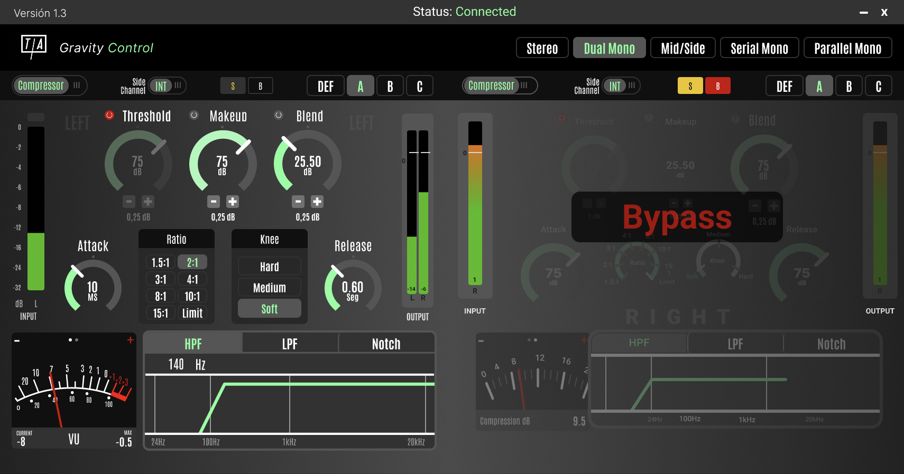

Two products, two very different users.
Singular Things specializes in ultra-compact, low-power IoT and Edge Computing devices capable of running Machine Learning models in connected or autonomous environments. During my Master's internship I joined their UX team and worked on two parallel design projects — a pharmaceutical cold-chain dashboard and an audio plug-in for a hardware compressor.
Both projects were done in Figma and delivered within two months. Despite being very different domains, they shared the same core challenge: translating dense real-time data into an interface that feels immediately readable to a specialist user.

Working in Figma — both projects developed simultaneously during the internship.
What I designed.
The SingularTag is an IoT device developed in collaboration with a major North American pharmaceutical company. It monitors temperature, humidity, and pressure continuously during the transport and storage of biological samples — ensuring the cold chain is never broken.
My task was to design the dashboard where the client reviews all the data the tag recorded during a shipment. The key design challenge was clear: the user doesn't want to read through raw sensor logs — they need to immediately know if something went wrong, and if so, exactly when and what.
The design question I kept asking: what's the most important thing this user needs to see in the first 5 seconds? Everything else is secondary.
The dashboard had to surface anomalies at a glance — moments where temperature, humidity, or pressure crossed the acceptable threshold — while still allowing the user to drill into the full timeline if they needed the detail.


SingularTag dashboard — overview and detail views designed in Figma.
The Gravity is a VCA Bus Compressor — a piece of hardware used in professional audio production. Singular Things was building a software plug-in version of it, so that audio engineers could use the same compressor inside their DAW without the physical unit.
The brief was specific: the plug-in had to include every function the physical device has, presented in a way that felt intuitive to someone already familiar with the hardware. That meant respecting the mental model of the original Gravity — same controls, same relationships between parameters — while making them work naturally on screen.
The challenge here was different from the dashboard. There was no data to simplify — the complexity was fixed by the hardware spec. The design work was about layout, affordance, and visual hierarchy: which controls feel primary, how the user's eye moves across the interface, and how to make a screen feel as immediate as turning a physical knob.


Gravity VCA plug-in — interface designed to mirror the physical hardware's controls and feel.
What this internship taught me.
Working across two such different products in two months forced me to switch mental models quickly. The cold-chain dashboard was about clarity under pressure — a pharmaceutical professional checking if a shipment is valid doesn't have time to interpret charts. The plug-in was about familiarity and trust — an audio engineer needs to feel like they're touching the same instrument they know.
Both are the same underlying UX problem, just in different domains: understand the user's existing mental model, and design something that fits inside it rather than forcing them to learn a new one.
This was also my first time designing for hardware-constrained interfaces. You can't add a feature or simplify a control just because it would look cleaner — the spec is the spec. Learning to work within hard constraints without losing design quality was the most valuable thing I took from Singular Things.